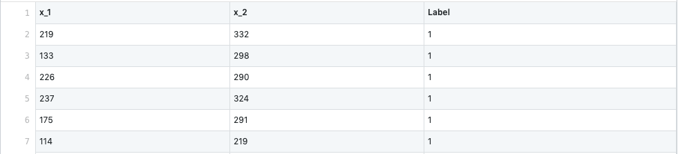
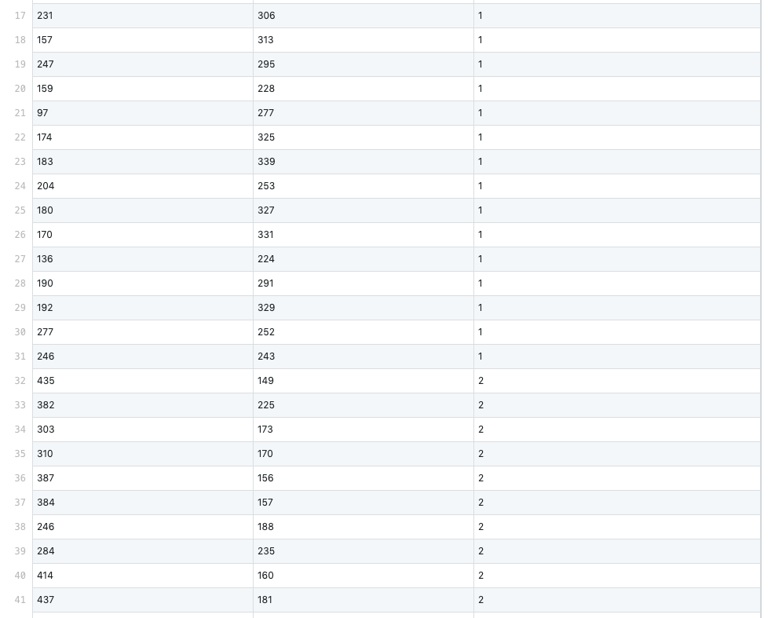
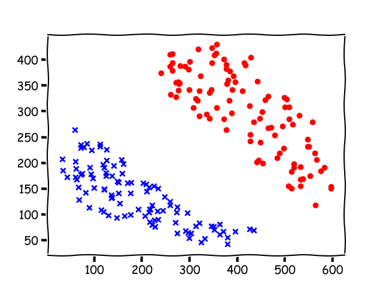
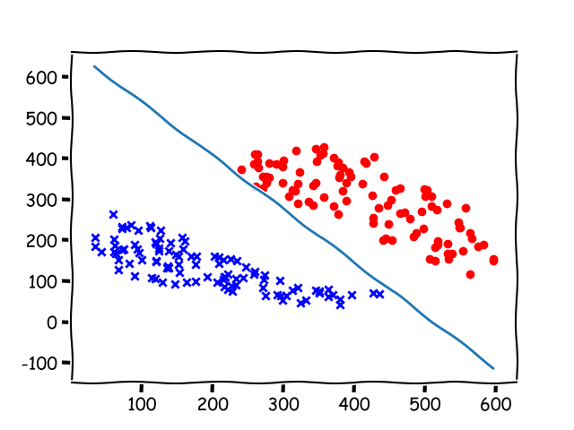
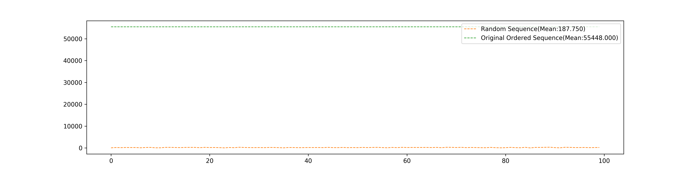
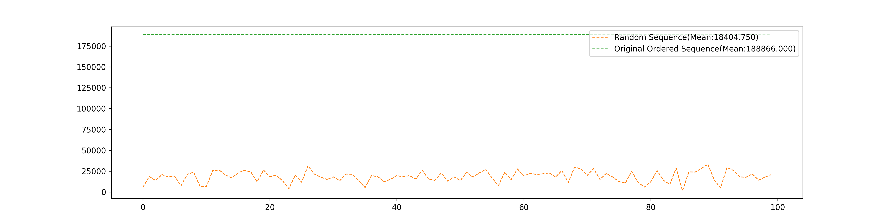
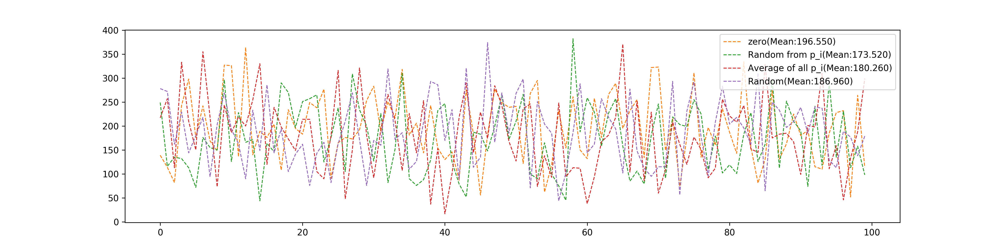
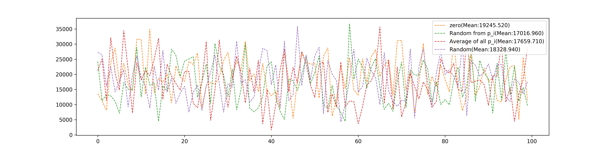
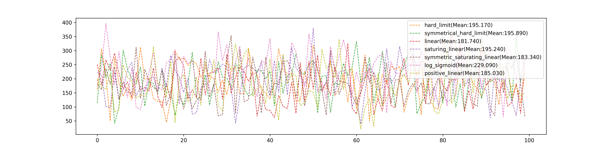
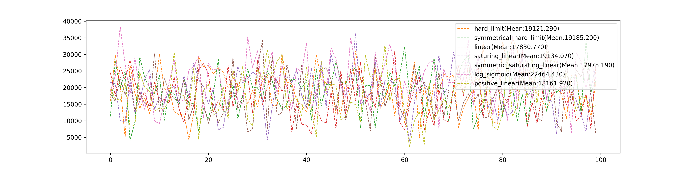

Implement of Perceptron
Keywords: perceptron, Implement of Perceptron, Analysis of Perceptron
Implement of Perceptron[1]
Some concepts had been built in the post
What we need to do next is to implement the algorithm described in ‘Perceptron Learning Rule’ and observe the effect of different parameters, the different training sets, and different transfer functions.
A single neuron perceptron consists of a linear combination and a threshold operation simply. So we note its capacity is close to a linear classification. Then our experiments should be done with samples that are linearly separable.
Before our experements, the first mission come to us is finding some or designing some training set. That is the data like:
containing inputs and corresponding targets. This can be solved by hand, but to generate more than 100 points, it becomes a monotonous job. We need a tool.
Generating of Sample
The tool can be found at https://github.com/Tony-Tan/2DRandomSampleGenerater. And please star it!
This script is using an image as an input, and different color in the image means different classes and the regions should be of the closed forms, like:

An image of two classes is fed into the script. And a ‘*.csv’ file will be generated. Part of the file is like:


where ‘x_1’ and ‘x_2’ are inputs and ‘Label’ is the target. For the scripts can deal with multiple class generation tasks, the label starts with to . So if you want to reassign target, it should be done in your program.
We can also draw a figure of these points and using a different color to identify their classes:

The use of script:

Algorithm and Code
Firstly, we assum we have had a training set which is 2-dimensional linear separable. And our algorithm is:
- initial weights and bias randomly
- test inputs one by one,
- if the output is different from target, go to step 3
- if the whole training set is correctly classified, stop the algorithm.
- else continue step 2.
- update
- is the weights
- is the input,
- is target can be one of ,
- is the output, one of ,
- is the learning rate, should be
- update
- is the bias
- is target can be one of ,
- is the output, can be one of ,
- is the learning rate, should be
- go back to 2.
Whole code can be find: https://github.com/Tony-Tan/NeuronNetworks/tree/master/simple_perceptron, and the main part of the code is:
1 | def convergence_algorithm(self, lr=1.0, max_iteration_num = 1000000): |
Training set 4 is showing below, and it is used as our standard experimental objective, for it is relatively difficult to deal with.
Training set 4
Points in the training set

Result(after 55449 epochs)

Analysis of the Algorithm
What we concern about the algorithm are its precision and efficiency. Because the convergence of the algorithm had been proofed. So what we are interested in is how to optimize the procedure of the algorithm to make it faster.
Epoch is a period when every point in the dataset is used once and only once.
Random input sequence
100 times test, we got the number of epochs of random order of training set that using in the algorithm: and of the original order of training set where the first half part of dataset belongs to one class, and the last half part belongs to another class"

The following are the total numbers of modification of original ordered data and random sequence data.

Initial Weights
Weights can be initialed in multiple ways:
- , is randomly selected from the training set.
- randomly in (-1000,1000) for every element.
This four different selections’ comparison of epochs they used:

and total modification they used:

Different Transfer Functions
We test:
- hard limit
- symmetrical hard limit
- positive linear
- hyperbolic tangent sigmoid
- log sigmoid
- symmetric saturating linear
- saturating linear
- linear
These eight different Transfer Functions’ comparison of epochs they used:

and total modification they used:

Conclusion
- The random sequence is far better than original order dataset which distributes different classes of data separately
- Linear transfer function looks good but not so good that can make it as a necessary selection in the one neuron perceptron model
- Initial methods can affect the convergence speed but not too much. Setting weights as one of the input seems good.
- The tool to generate samples should be staredhttps://github.com/Tony-Tan/2DRandomSampleGenerater
References
Haykin, Simon. Neural Networks and Learning Machines, 3/E. Pearson Education India, 2010. ↩︎